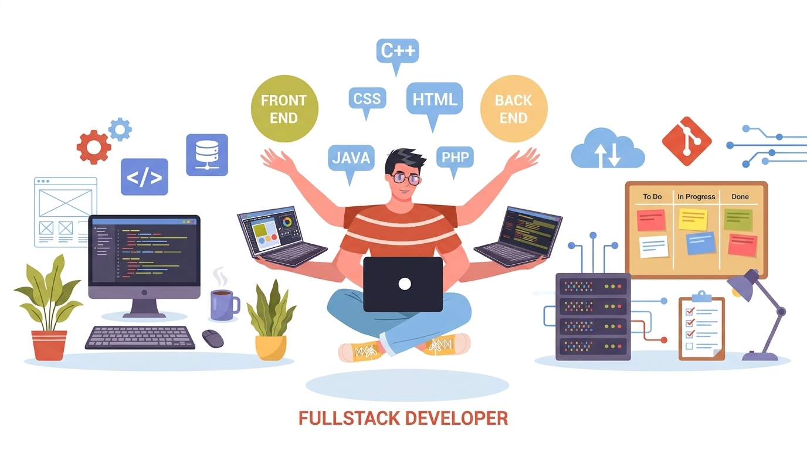

Goals
Where I'm headed
What I hope to achieve with my IT degree.

Short-term goals (this year)
- Pass all my subjects with good grades
- Learn one programming language well
- Build a small project I'm proud of
Long-term goals (after graduation)
Career
One of my biggest dreams in the field of Information Technology is to become a Full-Stack Developer. I want to learn how to build complete websites and applications, from the parts users see and interact with to the systems that work behind the scenes.
What interests me about this career is the opportunity to combine creativity and problem-solving. I want to understand both frontend and backend development, work with databases, and eventually create useful applications of my own.
I know that becoming a Full-Stack Developer won't happen overnight. There are programming languages, frameworks, and technologies that I still need to explore and master. But I'm willing to start from the basics, keep practicing, learn from my mistakes, and improve one step at a time.
Someday, I hope to look back at this beginning and be proud of how far I've come. For now, I'll keep learning, building, and turning my ideas into something real.
Skills
I want to improve my skills in HTML, CSS, JavaScript, Java, and database management as I continue my journey in Information Technology. I also hope to learn more about backend development, cybersecurity, and other technologies. In the future, I want to earn certifications related to web development and programming to strengthen my knowledge and help me achieve my dream of becoming a Full-Stack Developer.
Impact
I want to use technology not only to build a successful career but also to make a positive difference in the lives of my family and community. I hope to create useful websites, applications, and systems that can make everyday tasks easier, solve problems, and provide opportunities for others. Most importantly, I want to use the knowledge and skills I gain to help my family and give back to the community that has been part of my journey.
A message to my classmates
To my fellow classmates, let's continue learning, growing, and supporting one another throughout this journey. I know that college won't always be easy, and there will be times when programming gets confusing, deadlines become stressful, and challenges seem difficult. But let's not give up on our dreams. Let's help each other, share what we learn, and celebrate even the smallest achievements. Someday, we'll look back at these moments and be proud of how far we've come. Keep coding, keep learning, and let's make our journey worthwhile!